Follow Coptic SCRIPTORIUM on Twitter

Unless otherwise indicated, Coptic SCRIPTORIUM website and content
is licensed under a Creative Commons Attribution 4.0 International License.
Coptic SCRIPTORIUM is supported by
the National Endowment for the Humanities Office of Digital Humanities and Division of Preservation and Access,
the University of the Pacific, Georgetown University, and Canisius College.
 
